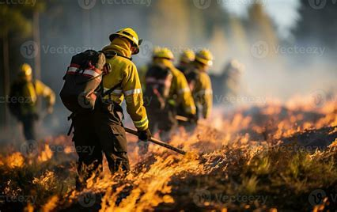
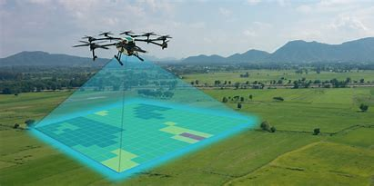
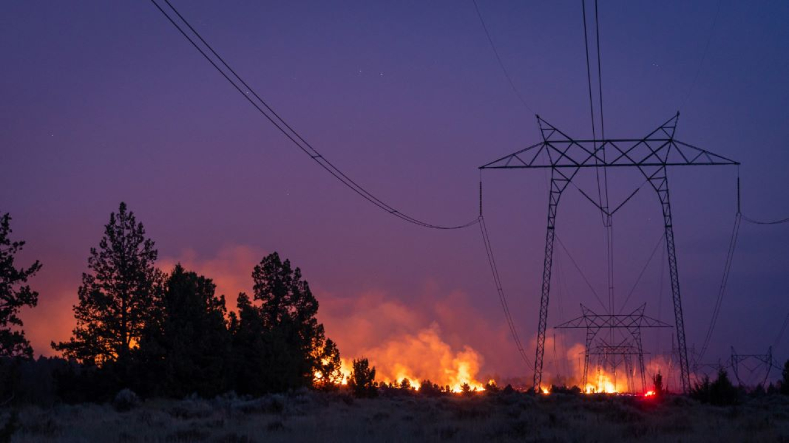
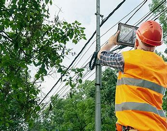
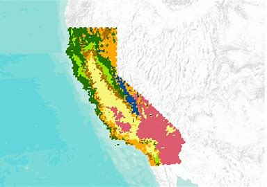

Dive into in-depth analysis and expert insights.

Discover how AI is transforming the way we detect and manage vegetation hazards.
Read More →
Revolutionize vegetation management with drones, digital twins, and AI, enabling precise detection and proactive handling of power line hazards.
Read More →
Explore how LiDAR and AI are revolutionizing power grid vegetation analysis, ensuring safer and more efficient hazard management.
Read More →Practical steps to detect, assess, and manage vegetation hazards.
Stay updated with current events and technology trends.

Sep 24, 2024
Utility vegetation management: Integrating AI and digital twins for enhanced safety and reliabilityThis tool leverages AI to detect hazardous vegetation in real-time.

Aug 20, 2024
Californian vegetation experts have improved powerline inspections with satellites and AIExperts discuss effective methods for wildfire prevention.